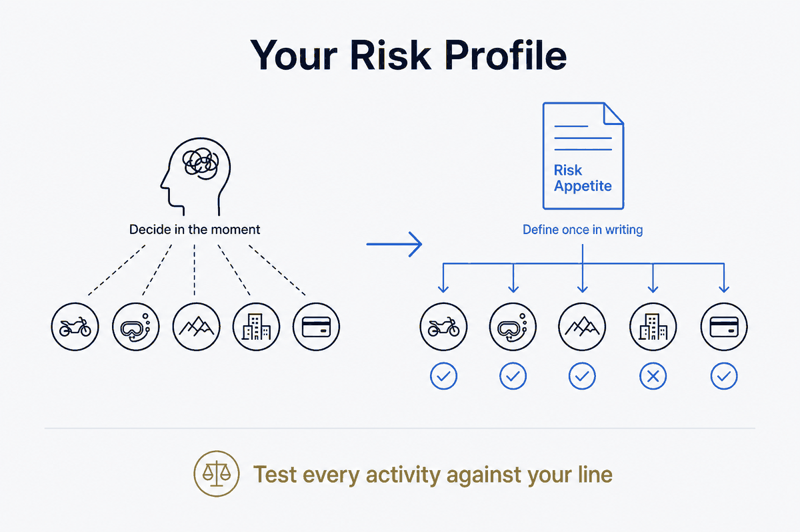

Define, once and in writing, how much risk you actually accept — so any activity, at home or on holiday, can be tested against it instead of decided in the heat of the moment.

Every activity carries a risk profile whether you name it or not. A motorbike ride, a dive, a via ferrata, a big financial move, a remote hike, a new city at night — each one sits somewhere on a scale of how much can go wrong and how badly. The mistake isn't taking the risk; it's deciding on it in the moment, with adrenaline and optimism doing the maths. The structural move is to define your own risk appetite once, in writing, as durable data — and then test each activity against it instead of re-arguing it every time.
The distinction that makes this usable is between risk appetite and risk profile. Appetite is how much risk you are willing to accept, stated up front and calmly: where your line is, in general and per domain. A profile is how a specific activity scores against that appetite: this ride, this trip, this purchase, given its likelihood and its consequence. Appetite is the ruler; the profile is the measurement. Most people carry a vague sense of both in their head and let the two blur — which is exactly how you end up doing something on holiday you'd never have agreed to at your kitchen table.
Writing your appetite down does three things a gut feeling can't. It holds still: the line you drew when calm doesn't move because the group is keen or the salesman is good. It is per-domain: you might accept real physical risk on a bike and almost none with money, or the reverse — one number for "risk" hides that. And it is shareable: a partner, a travel companion, an AI planning your trip can all read the same profile and filter against it, so "does this fit me?" has an answer that isn't a shrug. This is the same discipline as anti-interests — you define the boundary once so the system can honour it without you re-deciding — applied to danger instead of taste.
It works at both ends of life, not just the dramatic one. On holiday it decides the obvious things: which excursion, which road, which neighbourhood, which insurance. But it works at home too, and that's where it earns its keep, because home risk is the kind you stop seeing. Motorbiking on a Sunday, a ladder instead of scaffolding, a financial product you don't fully understand, deferred maintenance on a house — all of these have a profile, and all of them are usually decided by habit rather than against a line. A written appetite makes the familiar risk as visible as the exotic one.
Held as structured data, the profile becomes a gate you can point at. Before an activity, you don't ask "do I feel like it?" — you check it against the recorded appetite: is this inside my line, at its edge, or past it? Inside, proceed. At the edge, decide deliberately and write down why, because that's a real decision worth a record. Past it, the answer is already made and you've saved yourself the argument. That's the payoff of taking your own risk seriously: not caution for its own sake, but the freedom to say yes quickly to what fits and no cleanly to what doesn't — because you settled the hard part in advance, once, instead of every single time.